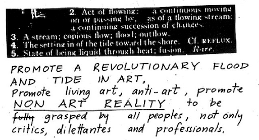

Adam Pendleton's Black Dada paintings, interview with Art in America
 Fluxus Digital Collection + Alternative Traditions in the Contemporary Arts (ATCA) Project from the University of Iowa Libraries
@rodneysampson's Storify, "A day in the life of a young black male engineering 'coding' student"
Kim Knight's Medium post, "CFP: 14 Reasons To Write Your Next Academic Paper As A Listicle* (* Or Quiz, Meme, Game, GIF, Vine, Vlog, Infographic, Twine Story, Explainer, Or Emoji Essay.)"
Thanks for starting the Babe Vibes site, Kara Haupt
Tricia Tongco with the Guerilla Girls: Your Radical Guide To Fighting Discrimination In The Arts
from their Kickstarter campaign for a deep web bake sale (that accepts bitcoins): "what happens when something innocent and cute takes place on the deep web?"
thedemands.org, blackliberationcollective.org
Robin D. G. Kelley's opening to the "Black Study, Black Struggle" forum in the Boston Review, Derecka Purnell's Radical Political Action Reading List